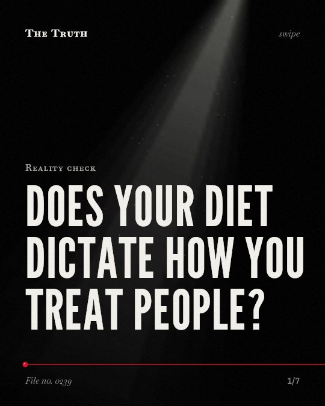

Reality check
Does your diet dictate how you treat people?

Your gut microbes may influence how you interact with others.
Differences in gut microbiome profiles are linked to prosocial behavior in rats. This evidence is currently emerging.
Established. Several studies combined, or official data. The evidence is mixed.
What the research found
Differences in gut microbiome profiles are linked to prosocial behavior in rats.
“Microbiome differences aligned with social behavior.”
Experiment, 2025. Hazani et al., Brain Behavior and Immunity.
Gut-brain axis dysfunction and microbiota dysbiosis are linked to potential mechanisms associated with chemotherapy-induced cognitive impairment and mucositis.
“Gut-brain axis dysfunction and microbiota dysbiosis have served as key portals in understanding the potential mechanisms associated with these functional gut disorders and their effects on cognition.”
Review, 2018. Bajic et al., Frontiers in Behavioral Neuroscience.
Early life stress leads to distinct microbiome profiles, especially among non-social rats, with variations in Bacillota and Bacteroidota abundance.
“Different stressors led to distinct microbiome profiles, especially among non-social rats, with variations in Bacillota and Bacteroidota abundance.”
Experiment, 2025. Hazani et al., Brain Behavior and Immunity.
Western diets are linked to an increased risk of altered pubertal timing via gut microbiota-mediated HPGA dysregulation.
“Western diets heighten altered pubertal timing risk via GM-mediated HPGA dysregulation”
Systematic review, 2025. You et al., Journal of Endocrinological Investigation.
The concept of psychobiotics is being developed to target the microbiota to positively impact mental health outcomes.
“the concept of psychobiotics is being developed and refined to encompass methods of targeting the microbiota in order to positively impact mental health outcomes.”
Review, 2017. Foster et al., Neurobiology of Stress.
Fiber-rich Mediterranean diets are linked to protective effects against altered pubertal timing.
“whereas fiber-rich Mediterranean diets exhibit protective effects.”
Systematic review, 2025. You et al., Journal of Endocrinological Investigation.
The link between your diet and your behavior is still being mapped.
Western diets are linked to altered pubertal timing through gut microbiota. Fiber-rich diets show protective effects. Most evidence currently comes from animal models.
Your food choices are more than just calories.
That may be why your diet is being studied as a potential tool for mental health and social behavior. The connection between your gut and your mind is complex.
This part is our reading of the evidence, not a finding.
You sit at a crowded table and feel a sudden shift in your mood.
You notice a change in how you react to the people around you after a long day of eating processed foods.
The honest summary
The sources establish a link between gut microbiota, stress, and social behavior in animal models, but much of the human data is currently limited to pubertal timing and general cognitive health.
Most findings regarding the gut-brain axis and behavior are based on preclinical rodent models rather than human clinical trials.
What is your diet doing to your social signals?
Sources
- Xiaoqing You, Wei Yang, Xiuyun Li et al. (2025). Dietary modulation of pubertal timing: gut microbiota-derived SCFAs and neurotransmitters orchestrate hypothalamic maturation via the gut–brain axis. Journal of Endocrinological Investigation. Systematic review, cited 15 times.
- Juliana Esma Bajic, Ian N. Johnston, Gordon Stanley Howarth et al. (2018). From the Bottom-Up: Chemotherapy and Gut-Brain Axis Dysregulation. Frontiers in Behavioral Neuroscience. Review, cited 99 times.
- Jane Allyson Foster, Linda Rinaman, John F. Cryan (2017). Stress & the gut-brain axis: Regulation by the microbiome. Neurobiology of Stress. Review, cited 1,171 times.
- Reut Hazani, Aron Weller, Sondra C. Turjeman et al. (2025). The social microbiome: Eubacterium links gut microbiota to prosocial behavior in stressed and naïve rats, a gut-brain axis study. Brain Behavior and Immunity. Experiment, cited 1 times.
Also read for this file, not quoted
- Mayer et al. (2021). The Gut–Brain Axis.
- Mayer et al. (2015). Gut/brain axis and the microbiota.
This file was researched and drafted by software, then checked by rules a model cannot talk its way around: each quote above was matched word for word against the paper, and every number had to appear in it. How files are made.